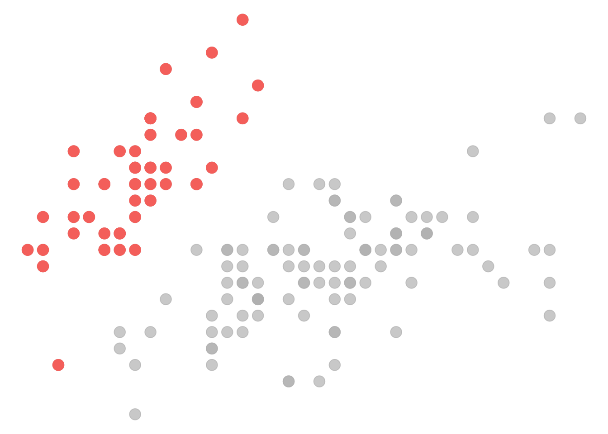
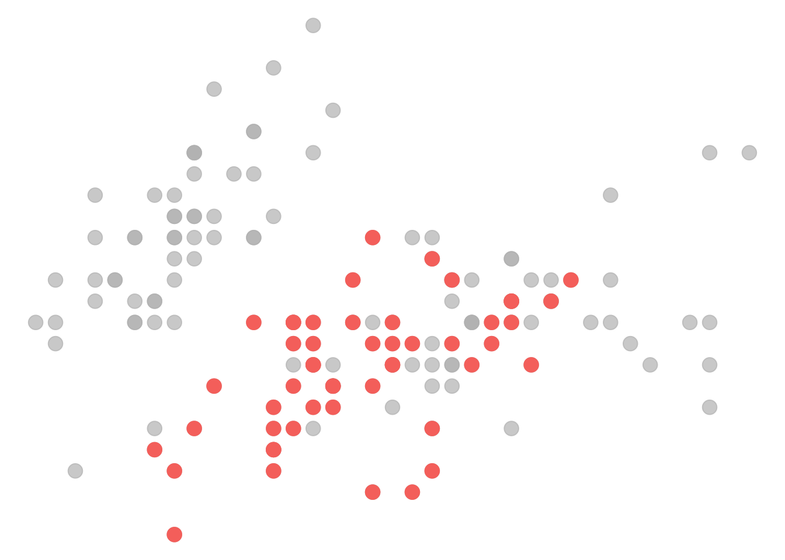
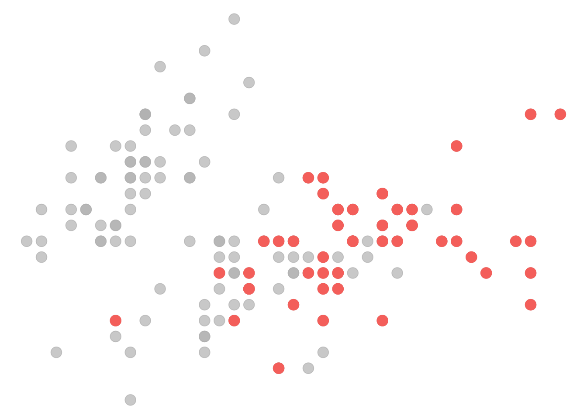

library(pander)
library(ggplot2)
library(dplyr)Imágenes
Personalización
Cambiar el estilo de una palabra
Cambiar colores
backgroundcolor: "#fcfafe"
fontcolor: "#2b1050"
linkcolor: "#7b2ddd"CSS
Cargar archivo css
css: style.scssCambiar estilos
h1, .h1, h2, .h2, h3, .h3 {
margin-top: 84px;
}
h2 {
font-size: 140%;
margin-top: 24px;
}Clases CSS
en theme.scss
.highlighted {
color: $theme-light-link;
font-weight: bold;
}[This text is highlighted]{.highlighted}.
This text is not.https://www.realtimecolors.com/?colors=2b1050-fcfafe-7b2ddd-ec8ac8-e45b88&fonts=Inter-Inter
Temas
https://quarto.org/docs/presentations/revealjs/themes.html#sass-variables
Cambiar color del índice
theme: theme.scss/*-- scss:defaults --*/
$toc-color: #127679;Tipografías
en theme.scss
@import url('https://fonts.googleapis.com/css2?family=Montserrat:ital,wght@0,100..900;1,100..900&display=swap');
@import url('https://fonts.googleapis.com/css2?family=Noto+Serif:ital,wght@0,100..900;1,100..900&display=swap');
$font-family-sans-serif: "Montserrat", sans-serif;Viñetas debajo de figuras
#| fig.cap = "Figure: Here is a really important caption."Enlaces internos
# Data wrangling {#section-2}Here is the link to the [section 2](#section-2) of the document!Ocultar código
format:
html:
code-fold: true
code-summary: "Mostrar código"HTML
<div style = "background: red;">
polli
</div>Videos
\{{\< video https://www.youtube.com/embed/wo9vZccmqwc >}}instagram: https://github.com/sellorm/quarto-social-embeds
Bloques
::: {style="max-height: 400px; overflow-y: scroll;"}
contenido largo
:::Extensiones
https://quarto.org/docs/extensions/
Símbolos
FontAwesome
quarto install extension quarto-ext/fontawesomeHolis {{< fa door-closed >}} {{< fa user-doctor >}}
Imágenes
https://quarto.org/docs/output-formats/html-lightbox-figures.html
Artículos académicos
https://quarto.org/docs/extensions/listing-journals.html
Inclusiones
Generar bloques con R
pander::pandoc.emphasis("Hola")Hola
setosa

Chao
versicolor

Chao
virginica

Chao